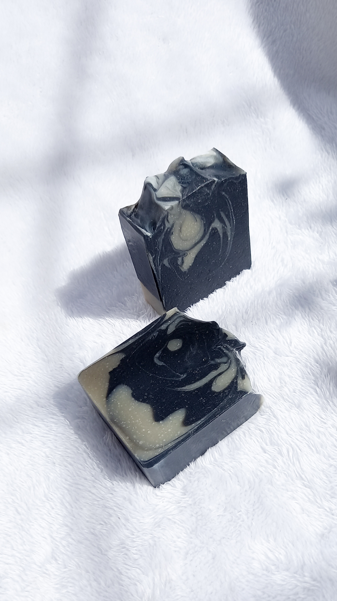
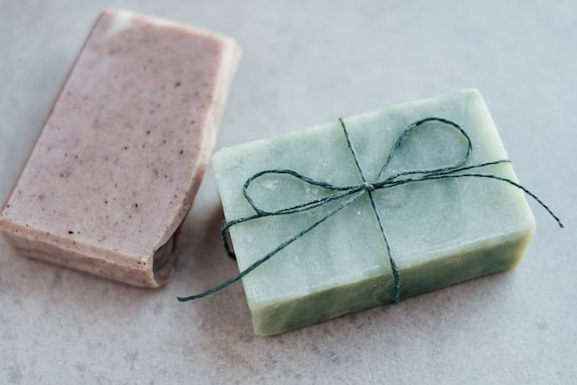
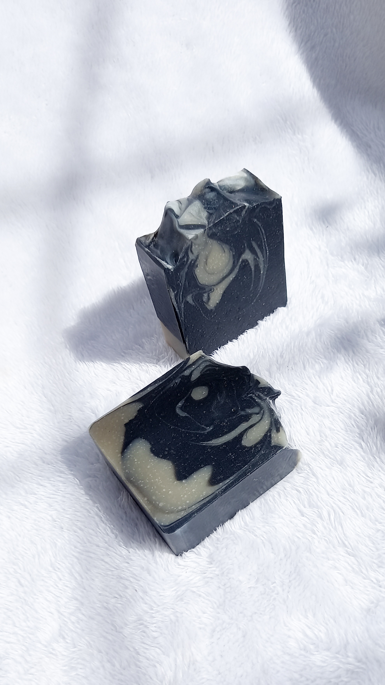
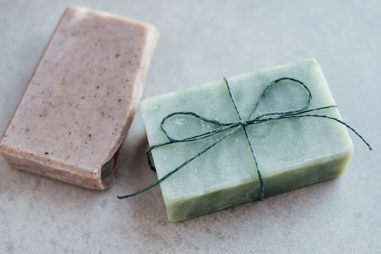
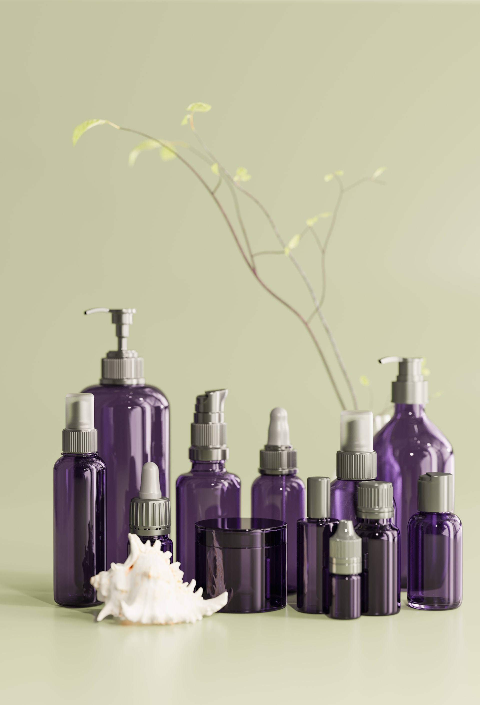
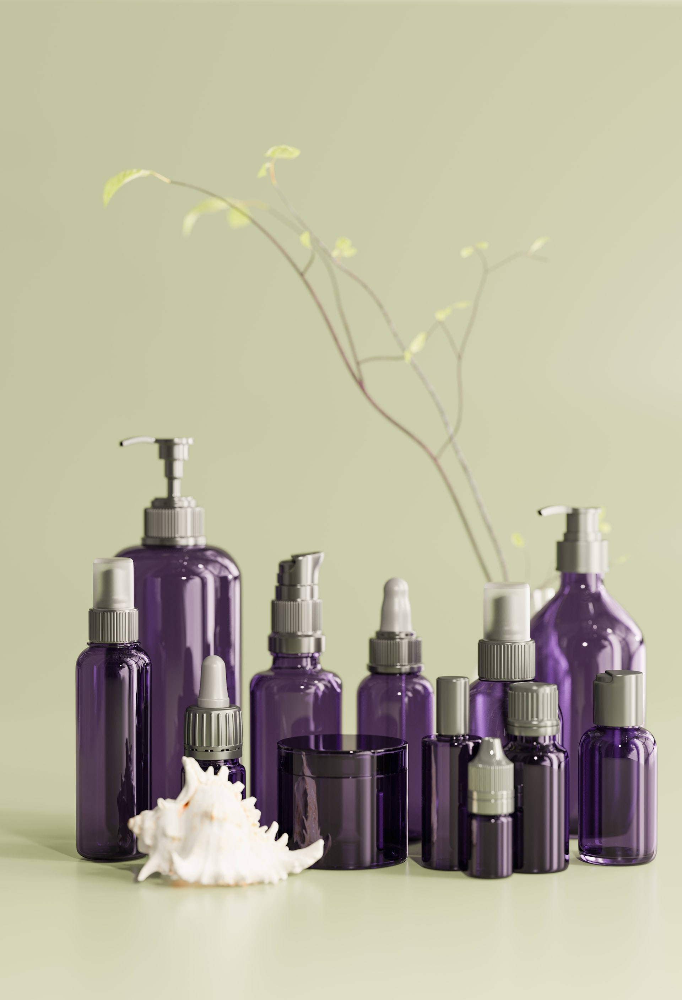

En nuestro curso aprenderás a elaborar janones por medio de las técnicas de soponificación en frio, te enseñaremos a hacer calculos, seleccionar materia prima, trabajar con hidróxido de sodio de manera segura.

En este curso te enseñaremos a elaborar una gran variedad de productos para el cuidado de piel y cabello, los mismos podrás personalizar y ajustar a tus necesidades, utilizando materiales faciles de conseguir.

En nuestro curso de de Skin Care te mostraremos como elaborar una rutina completa para el cuidado facial, además de cómo personalizar, elegir la materia prima y realizar todos los cálculos para escalar tu producción.
Nuestros productos estan elaborados con ingredintes naturales, nobles y seguros para la piel y el planeta. Nuestras líneas de jabones, productos de cuidado facial, capilar y corporal nutren, reparan y promueven la salud de la piel y el cabello.
 



 
